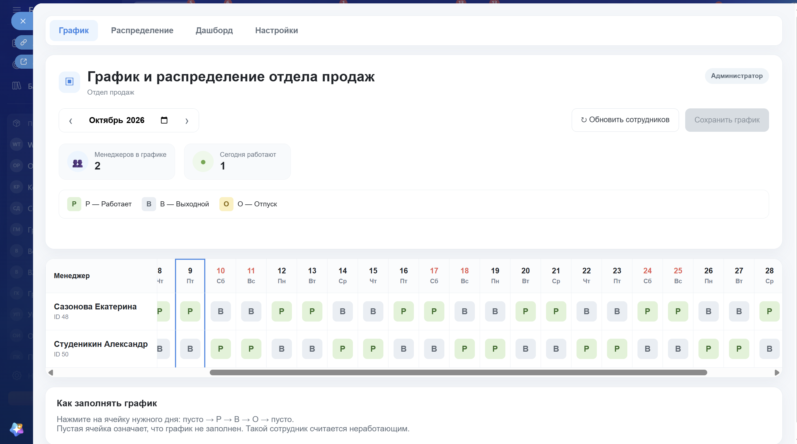
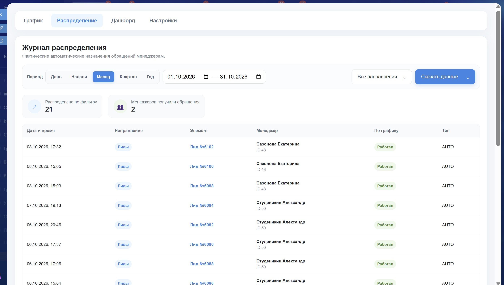
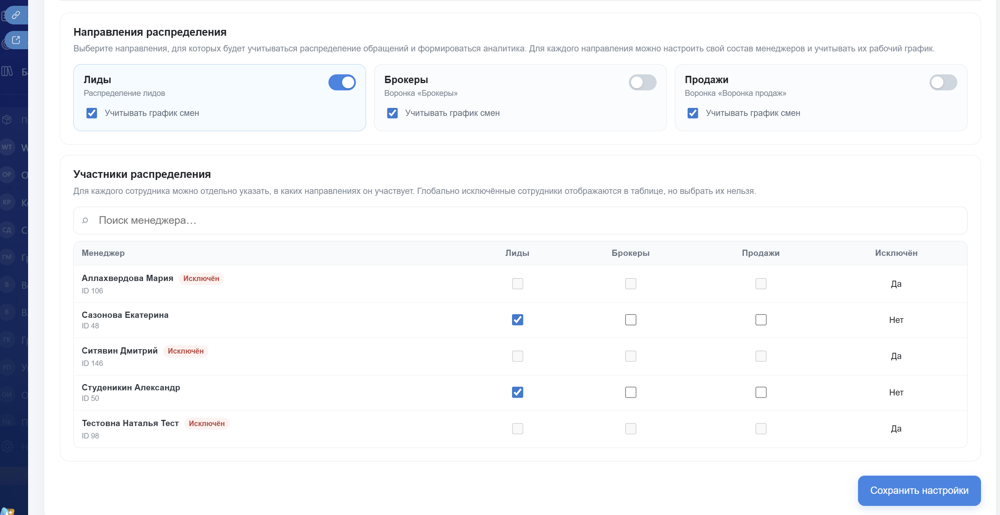

Отсутствующий менеджер пропускается
В список доступных попадает сотрудник со статусом «Работает» на текущую дату. Выходной, отпуск и пустая ячейка исключают его из распределения на этот день.
Аспекта / Кейс портфолио
Рабочие смены менеджеров, круговая очередь назначения лидов и аналитика фактической нагрузки в Битрикс24.
Для отдела продаж нужен единый рабочий график и понятная очередь назначения новых обращений. Система связывает план смен с бизнес-процессом Битрикс24, а фактические назначения возвращает в журнал и аналитику.



В список доступных попадает сотрудник со статусом «Работает» на текущую дату. Выходной, отпуск и пустая ячейка исключают его из распределения на этот день.
Если работает один менеджер, все новые обращения получает он. При двух или трёх работающих БП назначает обращения по кругу только между ними.
Глобальная переменная хранит ID последнего получателя. Новый день не обнуляет очередь: БП продолжает её среди сегодняшних работающих. Если последний получатель отсутствует в этом списке, назначение начинается с первого доступного.
В каждой успешной ветке БП сохраняет ID выбранного менеджера и отправляет запись в приложение после назначения ответственного. Журнал отражает выполненные назначения, а не план смен.
Проверяю всю цепочку: кто работает по графику, кого выбрал бизнес-процесс и какое назначение отразилось в аналитике.
Локальное PHP/JavaScript-приложение получает сотрудников через REST Битрикс24. График хранится отдельно от журнала: schedule.json — план смен, distribution_log.json — фактические назначения. API action=working передаёт сотрудников в БП, action=log_distribution принимает результат.
История сохраняет ID и имя сотрудника на момент назначения, в том числе после его увольнения. Добавление записей в JSON-журнал выполняется с блокировкой файла, чтобы параллельные записи не перезаписывали друг друга.
Рабочие смены считаются по сохранённому графику. Источник обращения для аналитики читается из текущей карточки CRM; его исторический снимок на момент назначения пока не сохраняется. Экспорт CSV и Excel учитывает выбранные фильтры.
Несколько назначений в одном запуске. При настройке выявили, что последовательные проверки после объединения веток могли снова изменить ответственного. Проверки построили вложенно: следующий вариант рассматривается в ветке «Нет», когда предыдущий не подошёл.
Назначение есть, статистики нет. Для записи результата использовали AssignedManagerId и отправку статистики внутри каждой успешной ветки. Это связывает строку журнала с фактически выбранным получателем.
Проверка очереди. В регламенте зафиксированы последовательные тесты на двух и трёх работающих менеджерах. Для повторной проверки — минимум четыре новых лида на двух менеджерах и шесть на трёх; дополнительно проверяются один работающий и смена состава графика.
Сверка результата. Ответственный в CRM → AssignedManagerId → строка журнала → счётчик и нагрузка на дашборде. Тесты используют память очереди, поэтому их нужно отделять от рабочего распределения.
Технический регламент описывает действующий БП в лидах и ветки для одного, двух и трёх работающих менеджеров. Для четырёх одновременно работающих потребуется расширение API и процесса. Настройки воронок «Брокеры» и «Продажи» подготовлены, но их подключение к автораспределению в регламенте обозначено как дальнейшее развитие.
Сценарий, когда не работает ни один менеджер, отдельно в регламенте не определён. Блокировка защищает запись журнала; защита самой очереди от одновременных запусков БП в описании не подтверждена.
Рабочий график определяет, кто участвует в очереди сегодня.
Каждое записанное распределение можно найти в журнале и открыть связанный CRM-элемент.
Число обращений сопоставляется с рабочими сменами менеджера, а не только с его долей назначений.